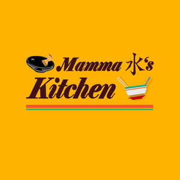

Trade Mark Journal No.2025/027 4 July 2025
UK00004209332 26 May 2025 (43)

- Class 43
- Fast food restaurants; Providing food and drink in doughnut shops; Serving food and drink in doughnut shops; Provision of food and drink in restaurants; Serving food and drink in Internet cafes; Providing food and drink in bistros; Food and drink catering; Catering of food and drink; Catering (Food and drink -); Providing food and drink in restaurants and bars; Providing food and drink in Internet cafes; Take-away food and drink services; Catering of food and drinks; Serving food and drink in restaurants and bars; Takeaway food and drink services; Providing food and drink for guests in restaurants; Serving food and drink for guests in restaurants; Food and drink catering for institutions; Take-away food services; Providing food and drink; Providing of food and drink; Serving food and drinks; Decorating of food; Preparation of food and drink; Take-away fast food services; Takeaway food services; Restaurant services for the provision of fast food; Provision of food and drink; Hospitality services [food and drink]; Catering for the provision of food and drink; Food and drink catering for banquets; Providing of food and drink via a mobile truck; Preparation of food and beverages; Services for the preparation of food and drink; Food and drink preparation services; Providing food and beverages; Food preparation; Catering; Catering services; Hotel catering services; Mobile catering; Business catering services; Catering services for hospitality suites; Catering services for company cafeterias; Outside catering; Mobile catering services; Outside catering services; Providing food and drink catering services for convention facilities; Providing food and drink catering services for exhibition facilities; Catering for the provision of food and beverages; Catering in fast-food cafeterias; Catering services for conference centers; Providing food and drink catering services for fair and exhibition facilities; Charitable services, namely providing food and drink catering; Organisation of catering for birthday parties; Catering services for the provision of food and drink; Catering services for retirement homes; Catering services for nursing homes; Food and drink catering for cocktail parties; Providing restaurant services; Banqueting services; Restaurant services; Hospitality services [accommodation]; Take-away restaurant services; Restaurant services incorporating licensed bar facilities; Take-out restaurant services; Providing banquet and social function facilities for special occasions; Holiday planning services [accommodation]; Hotel restaurant services; Services for reserving holiday accommodation; Self-service restaurant services; Fast-food restaurant services; Mobile restaurant services; Booking services for holiday accommodation; Personal chef services; Corporate hospitality (provision of food and drink); Arranging of wedding receptions [food and drink]; Food preparation services; Arranging of wedding receptions [venues]; Services for providing food and drink.
Mamma K’s Kitchen Ltd